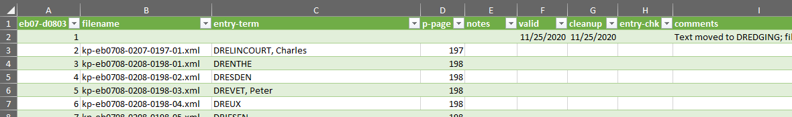

The entry-inventory file
differs from the page-inventory in one important respect. All sections under an encyclopedia letter are grouped
together as individual sheets (tabs) within a single spreadsheet. The
spreadsheet is thus stored in the edition folder, since it contains
the information for all sections. Unless you are
working with the entries that start a new letter, you will only need to create a new tab
in an existing entry-inventory and populate it.Figure 1. Entry-inventory file location
Open the entry-inventory and create a new tab by clicking
the + icon to the right of the existing tabs, at the bottom
of the window.
A new tab is created with generic label.
Double-click on the label for the new tab to rename it, using the
edition-section convention.
Figure 2. Entry-inventory file

Select any existing sheet and copy-and-paste the column headings into the new
sheet.
Update the first column headers (A1) with the new entry section number. Do the same for the worksheet tab at the
bottom of the spreadsheet.
To populate the sheet, import the data in the
Entry_Stats.txt file, which is automatically generated by
Python and placed in the same folder with the entry files .
In Excel, open the Data toolbar.
Place your cursor in cell A2. On the Data toolbar, select Get External Data > From Text.
Navigate to the folder containing the entry files and select the
Entry_Stats.txt file. The Text Import Wizard
opens.
The following steps depend on which version of Excel is being used. In
the case of newer version of Office, the Text Import wizard asks for the
column numbers. Use the following values:
65001: Unicode (UTF-8)
fixed width
0, 5, 34, 94, 100
Use the default settings for step one, and click Next
>.
For step two, click in the window at about column 80 to create a new
break line, between the page number and the "footnotes" comment. Click
Next >.
Click Finish in step 3.
The Import Data window appears. The defaults
should let you import into cell A2 of the existing worksheet. Click
OK.
Check to insure that all data is in the correct column. Add the date to the
valid column indicating when the entry files passed validation.
When the cleanup process is complete, add the date to the
cleanup column.
After the entry check is
completed and any problems noted, add the date to the
entry-chk column.
If there are problems noted in the entry check, correct them in the entry files and change the date in the cleanup
column.